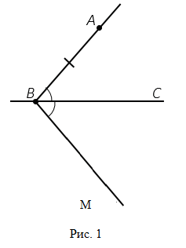
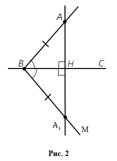
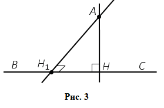

Теорема: Из точки, не лежащей на прямой, можно провести перпендикуляр к этой прямой, и притом только один.
Доказательство:
Пусть А-точка, не лежащая на прямой ВС (рисунок 1). Докажем сначала, что из точки А можно провести перпендикуляр к прямой ВС.

Отложим от луча ВС угол ∠МВС, равный углу ∠АВС. Так как ∠АВС=∠ МВС, то первый из них можно наложить на второй так, что стороны ВА и ВС первого угла совместятся со сторонами ВМ и ВС второго угла. При этом точка А наложится на некоторую точку А1 луча ВМ (рисунок 2). Обозначим буквой Н точку пересечения прямых АА1 и ВС. Отрезок АН и есть искомый перпендикуляр к прямой ВС. При указанном наложении (перегибании рисунка) луч НА совмещается с лучом НА1 , поэтому угол ∠1 совмещается с углом ∠2. Следовательно, ∠1=∠2. Но углы 1 и 2 - смежные, значит каждый из них прямой. Итак АН⏊ВС.

Докажем теперь, что из точки А можно провести только один перпендикуляр к прямой ВС.
Если предположить, что через точку А можно провести ещё один перпендикуляр АН1 к прямой ВС, то получим две прямые АН и АН1, перпендикулярные к прямой ВС, пересекаются (рисунок 3). Но это невозможно. Итак, из точки А можно провести только один перпендикуляр к прямой ВС. Теорема доказана.
